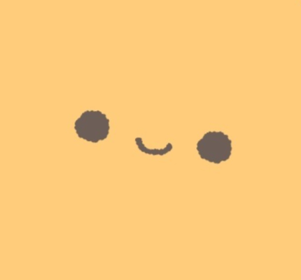

이상과 상상, 그 이상
흥미로운 것을 상상하고 만듭니다.
About ME.
저는 ▢▢▢▢한 사람입니다.
왼쪽 텍스트 영역에 마우스를 올려보세요.
Forgetful
Rude
HardWorking
Aggressive
Picky
Creative
Selfish
Timid
Capable
Hostile
Conservative
Communicative
I think, therefore, I am.
🏫 컴퓨터공학과 지망
💻 Software Engineer
생각나는 것을 만드는 프로그래머입니다.
저 또는 주위에 필요하다고 느끼는 것을 만듭니다.
🏫 디지털미디어학과 지망
🖌️ 3D & Graphic Designer
4차원적인 생각들을 2D나 3D로 만드는 디자이너입니다.
여러 생각들을 사회친화적으로 디자인합니다.

Be creative, Be better.
🌠
Efforts never betray.
노력이 쌓여 만들어진 프로젝트들입니다.
각 카드를 클릭하면 상세 정보를 볼 수 있습니다.
Practice makes perfect.
직접 다루며 익혀 온 기술 스택입니다.
카드를 잡고 좌우로 드래그하면 갤러리를 둘러볼 수 있습니다.
Feel free to contact.
새로운 인연과 대화는 언제나 환영합니다.
협업 제안, 프로젝트 문의, 가벼운 질문 모두 좋습니다.
각 버튼을 누르면 해당 연락처로 바로 연결됩니다.
© 2026 stx4R. All rights reserved.